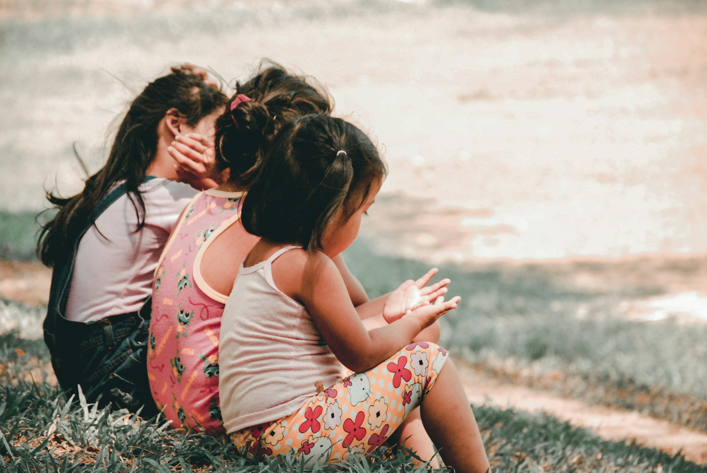
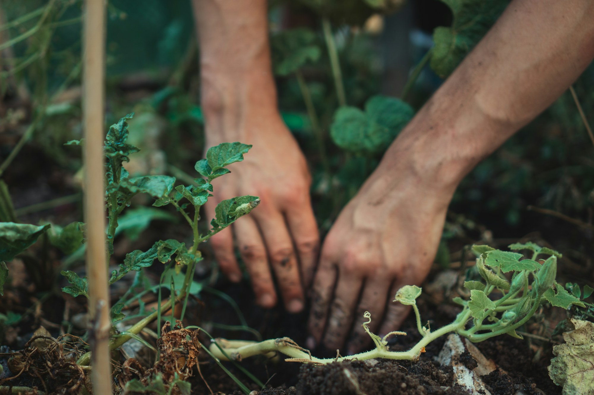
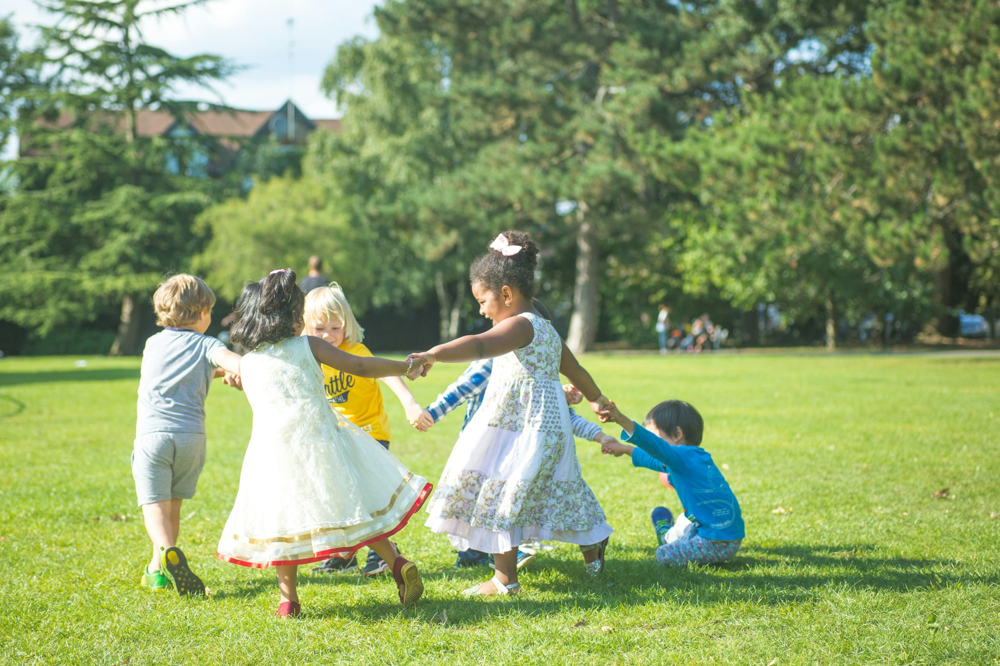
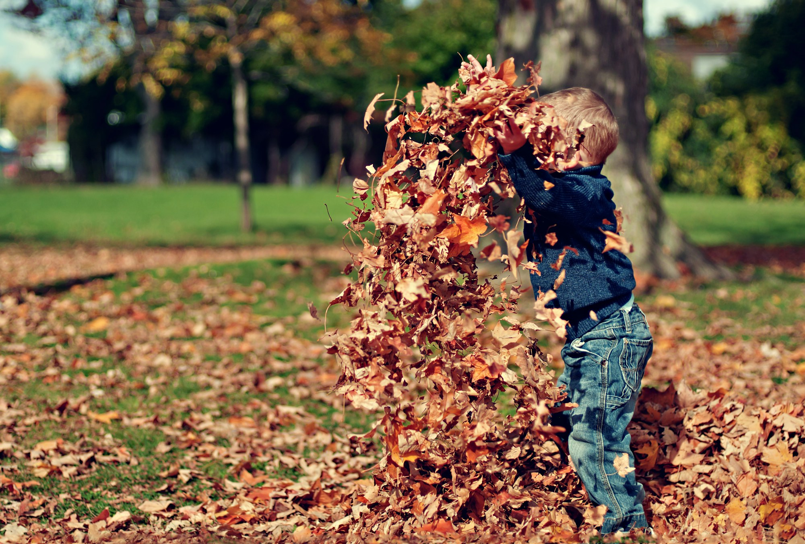
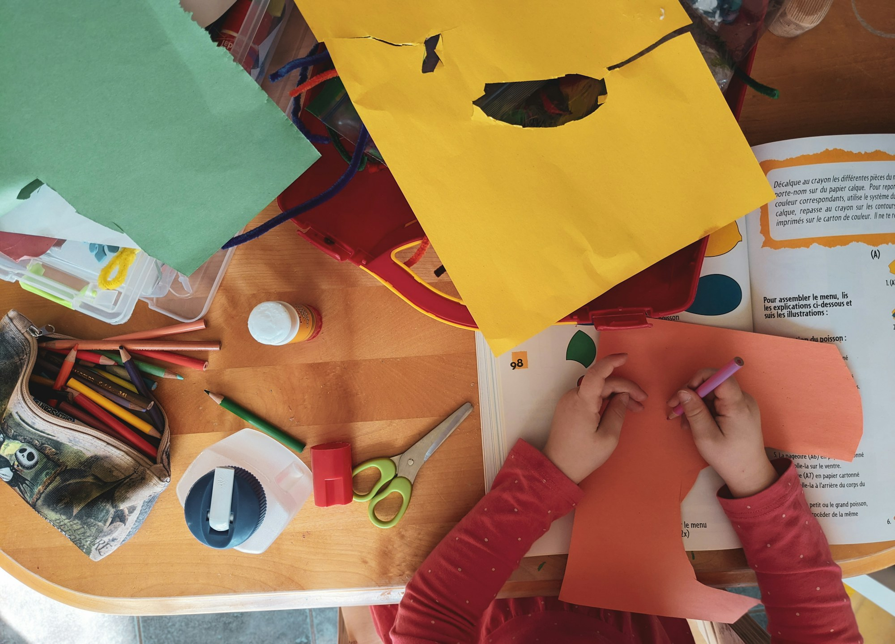
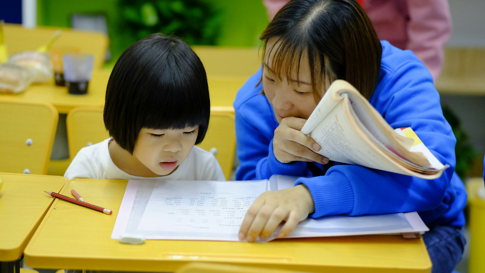
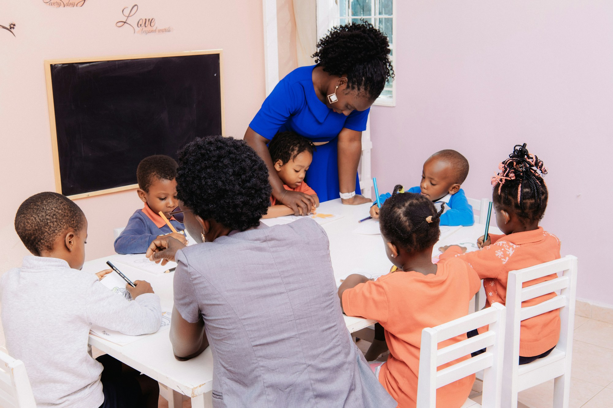
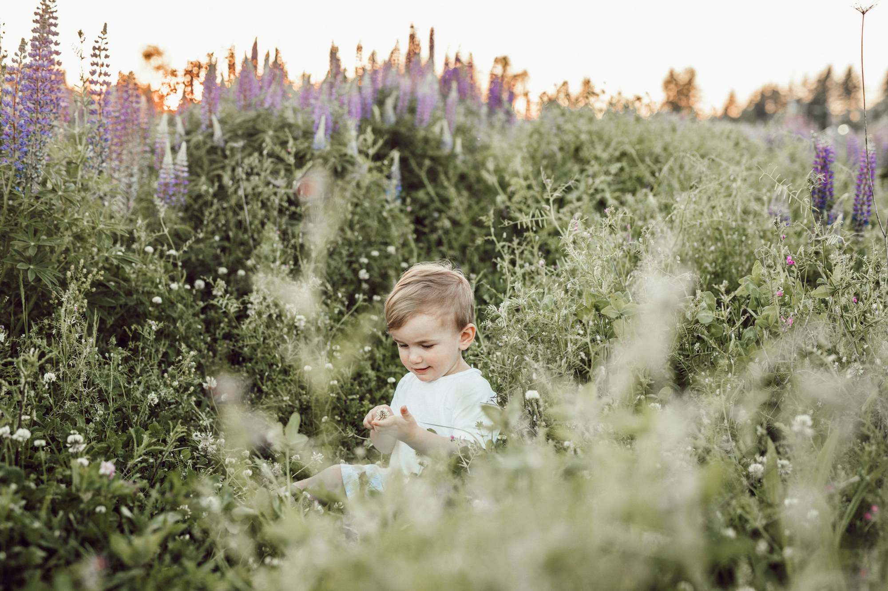
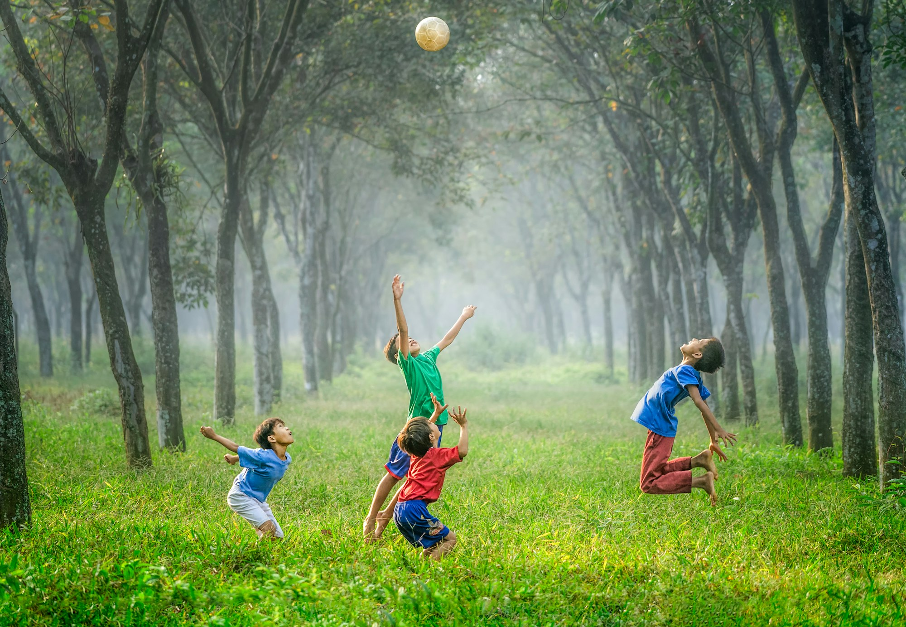

Rasa ingin tahu
yang bisa disentuh.
Tekstur, suara, warna, air, tanah, dan benda-benda sehari-hari jadi bahan untuk mengamati.
Sensorium Nature School / Prigen, Jawa Timur
Rasa ingin tahu punya banyak jalan. Di Sena, anak bergerak, menyentuh, mencoba, lalu tumbuh lewat pengalaman yang dekat dengan alam.
Alam sebagai ruang belajar.
Sensorik · gerak · kreasi · kebersamaan

Lebih dari sekadar kelas
Sena School — kepanjangan dari Sensorium Nature School — tumbuh dari gagasan sederhana: pengalaman langsung memberi anak ruang untuk mencoba, bergerak, berkreasi, dan memahami lingkungan dengan seluruh indranya.
Karena itu, alam bukan dekorasi. Ia adalah tempat untuk bertanya, bekerja sama, dan menemukan hal baru dengan ritme anak.
Kenali cerita SenaBukan duduk diam
Setiap permainan bisa menjadi latihan kecil untuk mengenali diri dan dunia. Bukan mengejar sempurna—melainkan memberi kesempatan untuk mencoba.
Tekstur, suara, warna, air, tanah, dan benda-benda sehari-hari jadi bahan untuk mengamati.
Memanjat, meniti, menggenggam, menyusun—anak melatih koordinasi sambil bermain.
Berbagi giliran, membuat sesuatu bersama, menyampaikan ide, dan merawat rasa empati.
Eksplorasi memberi ruang untuk mengenali pola, memecahkan masalah, dan berkreasi.
Kegiatan adalah ruang berlatih dan bereksplorasi; perkembangan setiap anak berbeda.
Banyak cara untuk mulai
Dari eksplorasi sensori sampai bimbingan belajar, setiap program punya cara dan ritmenya sendiri. Pilih yang terasa paling dekat—atau ajak admin berdiskusi.
06ruang
01 / RASAMenyentuh, menuang, memilah, mendengar. Anak mengenali dunia lewat aktivitas yang mengundang semua indranya.

02 / GERAKPermainan terarah membuka ruang untuk imajinasi, gerak, berbagi, dan mencoba bersama teman.
Kelas bermain tercantum sebagai salah satu program Sena School. Bentuk kegiatan, kelompok usia, dan jadwal mengikuti kelas yang sedang dibuka.
Tanya kelas bermain
03 / JELAJAHKebun, tanaman, dan ruang terbuka menjadi tempat untuk mengamati, bergerak, dan bertanya secara langsung.
Profil Sena mencantumkan kelas alam dan kegiatan outdoor sebagai bagian dari pengalaman belajar. Tema, usia, dan waktu kegiatan dapat berubah mengikuti agenda.
Tanya kelas alam
04 / CIPTAMeronce, dekorasi kue, baking, dan proyek kreatif lain mengajak anak berani beride dan membuat sesuatu.
Contoh kegiatan di profil: meronce manik-manik, dekorasi kue, dan kelas baking. Tema, usia peserta, dan kalender workshop dikonfirmasi untuk setiap agenda.
Tanya workshop
05 / PAHAMCalistung untuk anak TK dan seusianya, serta pendampingan belajar untuk siswa sekolah dasar.

06 / SEHARIHari yang diisi dengan stimulasi, belajar, bermain, dan kebersamaan dalam rutinitas yang terjaga.
*Informasi kelompok usia, durasi, lokasi, dan paket diringkas dari profil Sena 2024. Jadwal terbaru dikonfirmasi ke admin. Foto kartu berasal dari Unsplash dan bersifat ilustratif, bukan dokumentasi kelas Sena.
Bingung memilih?
Ceritakan sedikit tentang usia dan rasa ingin tahu anak. Kami akan memberi arah awal—untuk detail kelompok dan jadwal, admin Sena siap membantu.
Ruang yang mengundang eksplorasi
Pembelajaran Sena memadukan aktivitas akademis dengan pengalaman langsung di alam terbuka. Anak tidak hanya melihat—mereka diajak menyentuh, bergerak, dan menemukan.
Materi profil menyebut lokasi Sena School di Prigen, Pasuruan. Alamat rinci dapat diminta melalui admin. Foto fasilitas di sini adalah ilustrasi Unsplash, bukan dokumentasi ruang Sena.


Sebuah sekolah alam, lahir dari rasa ingin tahu
Sena School didirikan pada Juni 2024 oleh tiga founder. Pendekatannya menggabungkan eksplorasi berbasis alam, stimulasi sensorimotor, pengembangan soft skill, bakat, dan kreativitas—seraya melibatkan keluarga dan komunitas dalam proses belajar.
“Belajar bukan hanya apa yang anak tahu, tetapi apa yang ia alami.”S.Sos., M.Si.
Sarjana Ilmu Sosial, Universitas Jember; Magister Psikologi Sains, Universitas Muhammadiyah Malang.
S.Psi.
Sarjana Psikologi, Universitas Negeri Surabaya. Profil 2024 mencatat studi Magister Psikologi Sains di Universitas Airlangga.
A.Md.
Ahli Madya Perpajakan, Universitas Brawijaya; pada profil 2024 tercatat menjalankan peran bendahara.
Pendidikan dan peran diringkas dari booklet profil Sena Learning Center 2024. Mohon konfirmasi apabila membutuhkan profil tim terkini.
Yang sering ditanyakan
Kalau pertanyaanmu belum ada di sini, admin bisa bantu jawab detail program dan jadwal yang sedang tersedia.
Tanya langsungProfil Sena menyebut rentang usia 6 bulan hingga 12 tahun. Kelompok usia berbeda pada tiap kegiatan—kelas sensori, misalnya, mencantumkan usia 6 bulan, 1–2 tahun, dan 3–4 tahun. Sebaiknya konfirmasi kecocokan kelas kepada admin.
Program yang tercantum meliputi kelas sensori, kelas bermain, kelas alam, workshop soft skill/bakat/kreativitas, bimbingan calistung dan sekolah dasar, serta penitipan anak. Kalender program dapat berubah.
Di profil 2024, kelas stimulasi berdurasi 60–90 menit. Calistung tercantum 2 kali per minggu dan bimbingan SD 3 kali per minggu, masing-masing 60–90 menit. Mohon tanyakan jadwal terbaru sebelum mendaftar.
Lokasi Sena School dicantumkan di Prigen, Pasuruan. Profil juga menyebut bimbingan belajar berlangsung di Sena School Prigen dan Jl. Juanda, Pandaan. Hubungi admin untuk alamat lengkap dan pilihan lokasi yang aktif.
Booklet yang tersedia tidak mencantumkan harga. Hubungi admin melalui WhatsApp untuk biaya, ketersediaan tempat, dan proses pendaftaran paling baru.
Profil 2024 mencantumkan jam 07.00–16.00 untuk paket harian dan bulanan. Jam operasional serta ketersediaan saat ini perlu dikonfirmasi kembali kepada admin.
Satu pertanyaan bisa jadi awal
Perkenalkan usia dan minat anak. Admin Sena akan membantu menjelaskan program, jadwal, dan langkah berikutnya.
Mulai percakapan WhatsApp